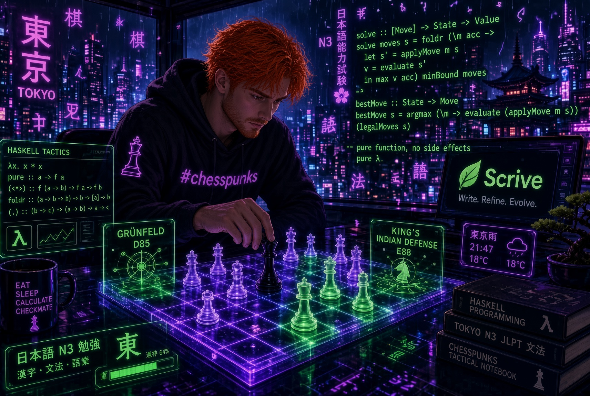

Every other week someone tells me that the real unlock for agentic coding is voice. Get a dictation tool, get a decent microphone, stop typing, just talk to the agent while it works. The pitch is always the same: you speak at around 150 words per minute and you type at maybe half of that, so half of your bandwidth is going to waste.
Voice-first is by now the dominant take, and I spent a couple of weeks living it: most of my prompts to Claude Code dictated, while working on Haskell at my day job. Then I went back to typing, because my results were noticeably better.
What I want to do in this post is defend that, but honestly, because when I went looking for why it worked better I found out that my first explanation was wrong. The interesting answer is not “typing beats talking”. It is that almost everyone in this argument, me included, was optimizing the wrong variable.
The model never hears your voice
Let me start with the part that I think gets lost in the discussion. Your LLM is not listening to you. Whatever you say goes through a speech-to-text model first, and what lands in the context window is a transcript. The choice was never “audio versus text”: it is text I wrote and read versus text a transcription engine wrote and nobody read.
That distinction matters because of who owns the last edit. When I type a prompt, the last thing that happens before the model sees it is me rereading it. When I dictate and fire, the last thing that happens is a probabilistic model guessing at my phonemes.
Dictation does not remove a step between you and the model. It inserts one, and hands it the final say.
Hold on to the word edit there, because it turns out to be the whole ballgame.
Code is a written language
The most concrete failure is that transcription is good at prose and bad at identifiers. Prose is what the model behind it was trained to predict; our code is full of tokens that no reasonable prior expects.
Say out loud “use foldMap over the Data.Map.Strict in Domain.Signatory and make sure it does not go through traverse” and see what comes back. In my experience: foldmap, data map strict, domain signatory, and my personal favourite, travers. Try it with a Japanese name, a Nix attribute path, or a branch called flavio/fix-2847-utf8-boundary, and it gets worse.
The unpleasant part is that these are silent failures. A typo I can see before pressing enter; a mangled identifier goes into the context as a confident, well-formed, wrong instruction, and the agent does what agents do: assumes you meant something, picks the nearest plausible thing in the codebase, and gets to work.
And then there is everything you cannot say at all. I cannot dictate a stack trace, a failing test, a JSON payload, the offending function, or a file path with an @ in front of it. A large fraction of what makes a prompt work is pasted context, and paste is a keyboard operation.
The best argument against me
Now let me make the other side’s case, because it is genuinely good and it deserves better than a straw man.
The strongest version goes like this: typing friction does not make you clearer, it makes you terser. Every typed prompt gets unconsciously optimized for brevity — you skip the file path, you do not explain the tradeoff you already weighed and rejected, you do not mention the edge case, you trust the model to infer. Not because your thinking is muddy, but because typing five paragraphs of context feels expensive. On this account my problem is not a thinking failure but a transmission failure, and dictation fixes exactly that: it makes context cheap. Say the whole tradeoff out loud, because saying it costs you nothing.
There is a second argument I find equally hard to dismiss, call it natural elaboration: in speech each sentence is triggered by the last one, so you end up covering aspects of the problem that would never have occurred to you staring at a blinking cursor. Fluency generates coverage.
And there is a third, practical one: LLMs are unusually good at cleaning up messy input. A compiler will not forgive you a missing semicolon, but a model will happily reconstruct your intent from a rambling paragraph. Which is why the two-step pattern going around is so popular: dictate messily, then have the model restructure it into a clean prompt. Think at voice speed, ship structured output.
I have to concede a lot of this. My typed prompts are terser than they should be. I have absolutely shipped a six-word prompt that deserved six sentences, and then blamed the agent for the diff.
It was never the keyboard
So if terseness is real, why did going back to typing improve my results? Here is where I had to change my mind about the mechanism.
What typing gave me was not speed, or friction, or hands-on-keys virtue. It was that I was composing instead of emitting — deciding what mattered before committing it, rather than producing words and letting the reader sort it out. Cognitive psychology has a name for the neighbouring effect, the generation effect: actively producing information beats passively receiving or emitting it. Writing researchers make the stronger claim that composition is reasoning, not the transcription of finished thoughts. The sentence refuses to end until I know the answer, and I have deleted more bad features with the backspace key than with any code review. As Leslie Lamport put it:
If you’re thinking without writing, you only think you’re thinking.
And the research on this is more sympathetic to voice than the slogan in my title suggests — which is exactly why it is worth reading. A computing-education study of 919 introductory students who could freely choose or switch modalities (Say What?, arXiv:2607.05808) found that on two of three problems, typed prompts were more likely to succeed on the first attempt than unedited voice prompts. The detail that matters is the next sentence: there was no difference for students who edited their transcribed speech before submitting.
The keyboard was not doing the work. The editing was.
A second paper on typing’s displacement by AI (The Instrumental Dissolution of Typing, arXiv:2604.17023) reaches a compatible conclusion from the other direction: typing’s own cognitive advantages are real but bounded and modality-specific — visual working-memory buffering, rhythmic entrainment, motor efficiency for convergent thinking — while the benefits of the compositional act itself are largely medium-general, provided the deliberate effort survives the change of medium.
Which reframes the whole debate. The axis everybody argues about is speed versus friction. The axis that actually predicts whether your prompt works is:
Did you compose it, or did you just emit it?
A dictated ramble you never reread is emission. A six-word typed one-liner that skips the file path and the tradeoff is also emission — same failure, quieter. And a dictated paragraph you reread and fixed is composition, which is why the two-step pattern works: not because the model tidies your grammar, but because it forces a text you then have to look at.
My 150-versus-40 words per minute framing was wrong too, by the way. Adult silent reading of non-fiction runs around 238 words per minute — I know because I cited the paper when I wrote about adding estimated reading time to this blog. Composition is the expensive side and reading is the cheap side, so you pay once and then the model reads it fast, you reread it fast, and your future self reads it fast six weeks later in a pull request.
Why I still write by default
If composition is medium-general, why keep the title? Because defaults decide behaviour, and the two media have opposite ones. When I type, composition is the default and emission takes a deliberate shortcut. When I dictate, emission is the default and composition takes a deliberate extra step — one that lives on the far side of a transcript I already feel finished with.
There is also a set of advantages that survive independently of all this, because a prompt in agentic coding is not chat, it is a spec:
- Structure. Numbered steps, nested bullets, an explicit “do this, do not do that”, fenced blocks showing the exact output shape. Speech is strictly linear and strictly flat, and intonation does not survive transcription.
- Reuse. Good prompts graduate: they become a section of
CLAUDE.md, a spec file in the repo, the body of the PR. A voice message is write-only. - Pronouns. Spoken English is full of “it”, “that”, “the other one”, “the thing we just did”. Those work between humans because we share a visual field and you will interrupt me the moment you lose the thread. An agent will resolve “it” to something and let you discover which something in the diff.
Where talking wins
All of the above assumes you know what you want. When you do not, the trade-off genuinely flips, and I think this deserves to be a thesis rather than a caveat:
Voice for divergent thinking. Writing for convergent thinking.
When I am not implementing a spec but iterating on a design — should this live in the domain layer or the handler, is this an Either or a proper error type, what are the three ways to model this state machine, what am I not seeing — talking is the better tool, and I use it.
Everything I complained about above inverts in that mode. The looseness is the point: I want to say the half-formed thing my inner editor would have killed, and hear it argued with. There are no identifiers to mangle because the nouns are still concepts, not symbols. Natural elaboration is a feature when coverage is what you need. And being wrong is nearly free: a bad design conversation costs five minutes, whereas a bad implementation prompt costs a wrong diff, a review, a revert, and the temptation to keep the code because it already exists. Note that the typing advantage the second paper identifies is specifically for convergent work — the evidence splits along the same seam.
It is also worth saying plainly that voice is not a lesser interface, just a differently-shaped one. Some of my best design thinking happens on a walk with a rubber duck that talks back, nowhere near a keyboard. And for anyone dealing with RSI or any other reason typing is expensive, dictation is not a compromise, it is access — the composition argument works fine at 150 words per minute, as long as the editing step is real.
Which is the one habit I would insist on: end the divergent phase by having it written down. Ask the agent to produce the plan as text, then edit that text yourself before a single line is implemented. That edit pass is where you catch the thing you agreed to out loud without quite meaning it. The conversation was voice; the spec is still writing.
The heuristic
Two lines, short enough to remember:
Talk while the answer is still a shape. Write once the answer has names.
And whichever one you pick: compose, do not emit.
If your prompt contains a module path, a type signature, an identifier, a file, or the word “exactly”, type it. If your prompt is “here is what I am considering, poke holes in it”, say it and enjoy the walk. If you dictated it, read it back before you press enter — that is not pedantry, it is the entire measured effect.
If you disagree, and given the state of the discourse I assume many of you will, I would genuinely like to hear why. Feel free to comment below or reach out on Twitter/BlueSky. And if you found this useful, consider sponsoring my work 🙌🏻